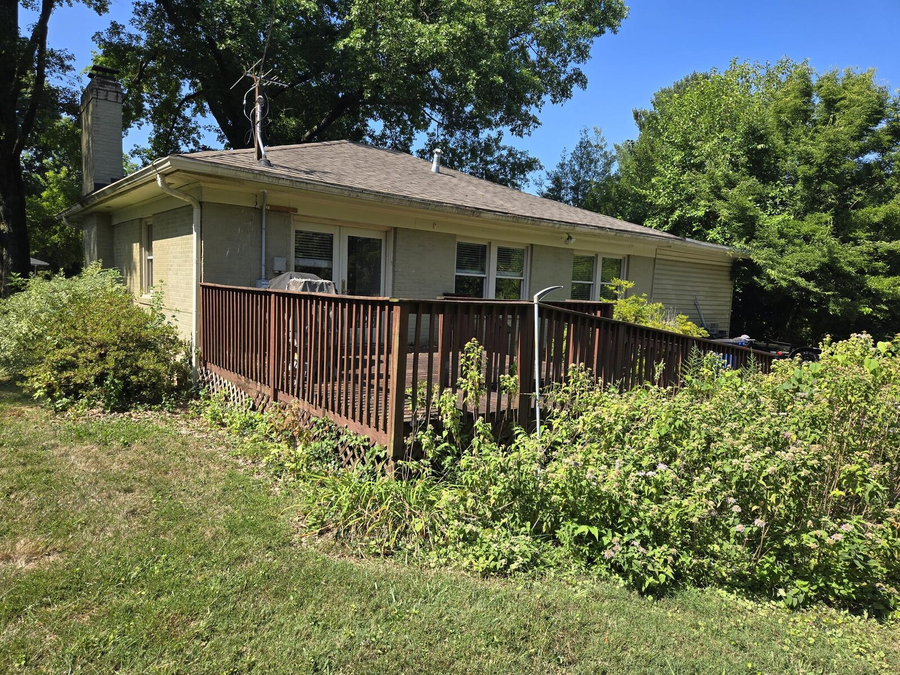
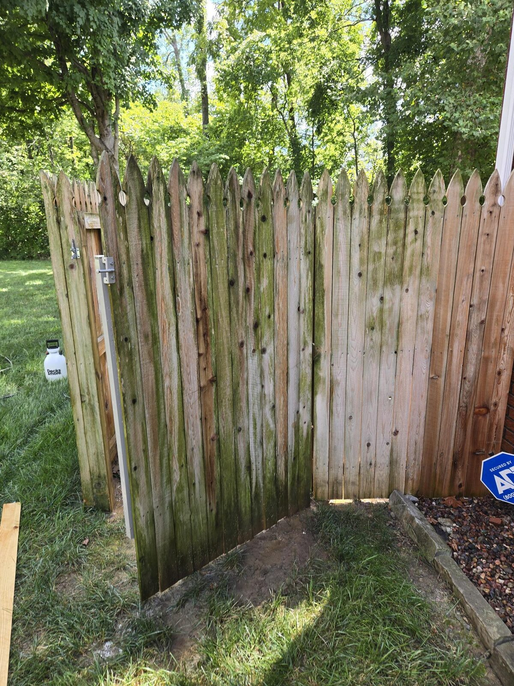
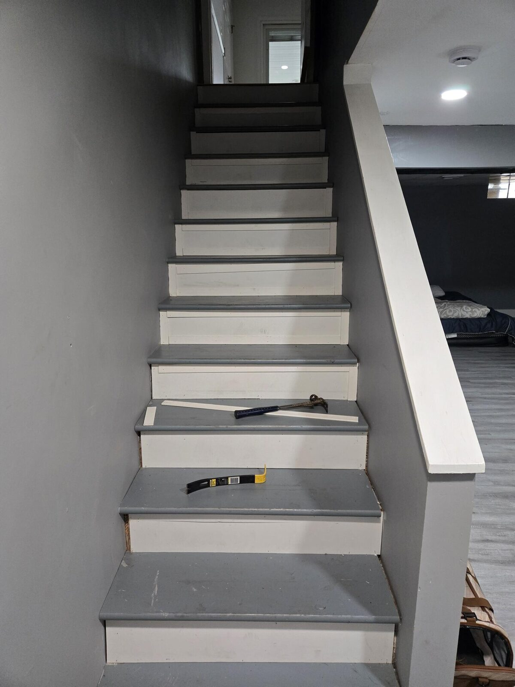

Fence installation and replacement
New wood privacy and picket fences, or an old fence taken out and replaced. Measured and set to the property line.
Fence installationFences, decks and home repairs · Louisville, KY
Donnie Does It LLC builds and repairs fences, gates, decks and stairs, and takes the indoor jobs too: floors, doors, windows, paint and drywall. From a single fence post to a full replacement.
Fix it. Build it. Donnie Does It.


BeforeFigures from the Donnie Does It LLC Facebook page, October 2026.
Services
Fences and decks are most of the work. The same hands fix the stairs, the floor and the drywall.
New wood privacy and picket fences, or an old fence taken out and replaced. Measured and set to the property line.
Fence installation
Broken posts replaced and worn sections rebuilt, so the fence you have keeps standing.
Fence repair
New gates and gate repairs, including privacy gates across a driveway.
Gates
Old decks torn down and rebuilt, with railings, ramps and pergolas, plus deck renovations.
Decks
Outdoor stairs up to a deck, and porch rails that make the steps safer.
Stairs
Indoor stairs upgraded with new treads and risers.
Stair treadsNew floors, including a kitchen floor replaced after a leak.
Doors and windows replaced or repaired.
Drywall fixes and fresh paint, indoors.
The outside fixes that keep a house in good shape.
The list of small jobs, for a home or an office.
Before and after
Three real jobs, each beside a Facebook review about the same kind of work. Reviews are paraphrased.

Old fences come out, new ones go in on the right line.
A homeowner had a 6-foot privacy fence installed. He came out more than once to measure and check the property line, stayed patient through her changes, and finished quickly at a fair price.
From an old stained deck to new railings, a ramp and a pergola.
One customer had him build her fence, then tear down and rebuild the deck at her parents' house, and highly recommends him. Another had both a fence and a deck done and called the work high quality and on time.

A stair tread and riser upgrade, and floors after water damage.
He replaced a whole kitchen floor after a plumbing leak, on time and professionally, and added a front-porch rail so aging parents are safer on the steps.
Recent work
Service area
Homes and offices around Louisville. Ask on Facebook if you're not sure your street is covered.
About
Trusted for jobs that need done right.
Donnie started Donnie Does It LLC to take on fence, deck and repair work around Louisville, and he posts photos of the jobs as he finishes them.
He handles fences, decks, doors, windows, stairs, flooring, painting and drywall, from small repairs to full replacements, for homes and offices. He describes the business as licensed, insured, honest and fair with pricing.
Customers mention the same things: he shows up when he says, measures before he builds, and does the work at a fair price.
One customer needed a single privacy-fence post replaced. He arrived early, worked through the rain, also secured the rails on her back steps, and charged a reasonable price. She plans to call him again.
Contact
Message Donnie Does It LLC on its Facebook page. Find us on Facebook
Say what needs fixing or building. Reviewers describe him coming out to measure before the work starts.
Louisville, KY. Homes and offices.